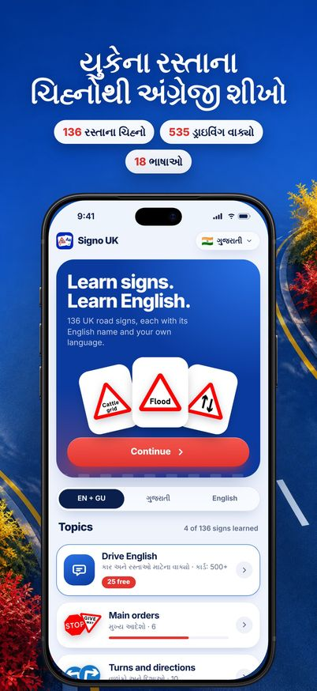
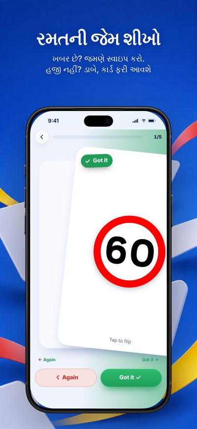
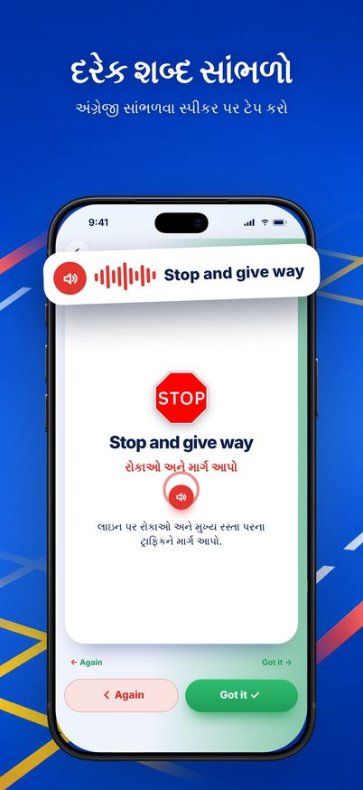
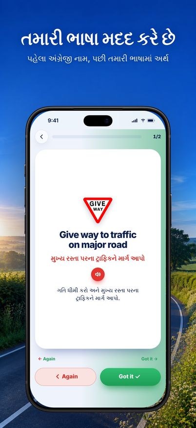
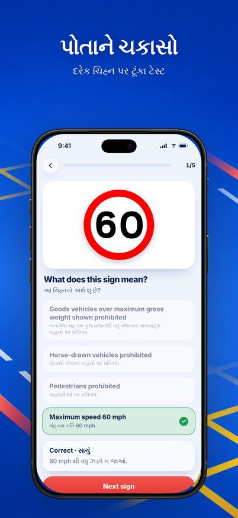
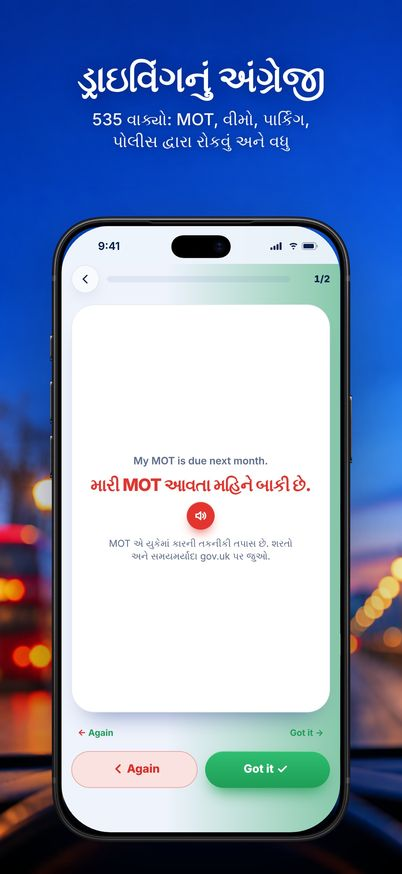
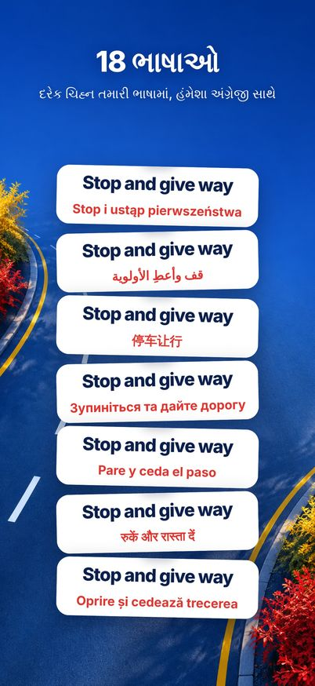
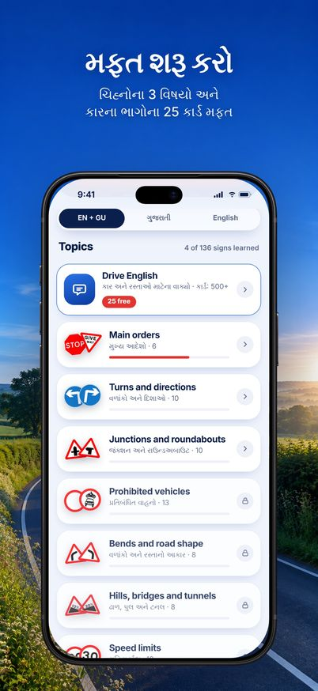
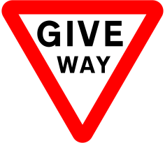

યુકેના રોડ સાઇન, ગુજરાતીમાં
દરેક સાઇનનો અર્થ અને તેનું અંગ્રેજી નામ. Signo એક iPhone એપ છે: યુકેમાં ડ્રાઇવિંગ માટે 136 સાઇન અને 535 વાક્યો, ગુજરાતી સમજૂતી સાથે.
App Store પરથી ડાઉનલોડ કરોમફત: સાઇનના 3 વિષયો અને કારના ભાગોના 25 શબ્દો. Signo Pro બધું ખોલે છે.


રમતની જેમ શીખો
સાઇન આવડે તો જમણે સ્વાઇપ કરો, નહીં તો ડાબે, તે ફરી આવશે. દરેક અંગ્રેજી નામ બ્રિટિશ અવાજમાં સાંભળો, પછી નાની કસોટી આપો.








સામાન્ય સાઇન અને તેમનો અર્થ
સમજૂતી જોવા માટે સાઇન પર ટેપ કરો.
- રોકાઓ અને માર્ગ આપોStop and give way

મુખ્ય રસ્તા પરના ટ્રાફિકને માર્ગ આપોGive way to traffic on major road વાહનો માટે પ્રવેશ નિષેધNo entry for vehicular traffic
વાહનો માટે પ્રવેશ નિષેધNo entry for vehicular traffic રાષ્ટ્રીય ગતિ મર્યાદા લાગુ પડે છેNational speed limit applies
રાષ્ટ્રીય ગતિ મર્યાદા લાગુ પડે છેNational speed limit applies- મહત્તમ ગતિ 30 mphMaximum speed 30 mph
 મહત્તમ ગતિ 20 mphMaximum speed 20 mph
મહત્તમ ગતિ 20 mphMaximum speed 20 mph મહત્તમ ગતિ 40 mphMaximum speed 40 mph
મહત્તમ ગતિ 40 mphMaximum speed 40 mph મહત્તમ ગતિ 50 mphMaximum speed 50 mph
મહત્તમ ગતિ 50 mphMaximum speed 50 mph મહત્તમ ગતિ 60 mphMaximum speed 60 mph
મહત્તમ ગતિ 60 mphMaximum speed 60 mph 20 mph ઝોનમાં પ્રવેશEntry to 20 mph zone
20 mph ઝોનમાં પ્રવેશEntry to 20 mph zone ઓવરટેક કરવાની મનાઈ છેNo overtaking
ઓવરટેક કરવાની મનાઈ છેNo overtaking જમણે વળવાની મનાઈ છેNo right turn
જમણે વળવાની મનાઈ છેNo right turn ડાબે વળવાની મનાઈ છેNo left turn
ડાબે વળવાની મનાઈ છેNo left turn યુ-ટર્ન લેવાની મનાઈ છેNo U-turns
યુ-ટર્ન લેવાની મનાઈ છેNo U-turns ડાબી બાજુ રહોKeep left
ડાબી બાજુ રહોKeep left મિની રાઉન્ડઅબાઉટMini-roundabout
મિની રાઉન્ડઅબાઉટMini-roundabout- આગળ રાઉન્ડઅબાઉટ છેRoundabout ahead
 બધા વાહનો પર પ્રતિબંધAll vehicles prohibited
બધા વાહનો પર પ્રતિબંધAll vehicles prohibited મોટર વાહનો પર પ્રતિબંધNo motor vehicles
મોટર વાહનો પર પ્રતિબંધNo motor vehicles મુખ્ય કેરેજવે પર રોકાવાની મનાઈ છેNo stopping on main carriageway
મુખ્ય કેરેજવે પર રોકાવાની મનાઈ છેNo stopping on main carriageway ફક્ત બસો, પેડલ સાયકલ અને ટેક્સીઓ માટેનો માર્ગRoute for use by buses, pedal cycles and taxis only
ફક્ત બસો, પેડલ સાયકલ અને ટેક્સીઓ માટેનો માર્ગRoute for use by buses, pedal cycles and taxis only નિયંત્રિત પાર્કિંગ ઝોનમાં પ્રવેશEntrance to controlled parking zone
નિયંત્રિત પાર્કિંગ ઝોનમાં પ્રવેશEntrance to controlled parking zone ફક્ત પરમિટ ધારકો માટેPermit holders only
ફક્ત પરમિટ ધારકો માટેPermit holders only ફક્ત દિવ્યાંગ બેજ ધારકો માટેDisabled badge holders only
ફક્ત દિવ્યાંગ બેજ ધારકો માટેDisabled badge holders only પાર્કિંગની જગ્યાParking place
પાર્કિંગની જગ્યાParking place સ્પીડ કેમેરાSpeed cameras
સ્પીડ કેમેરાSpeed cameras રોકાઓ - પોલીસStop - Police
રોકાઓ - પોલીસStop - Police જ્યાંથી મોટરવે નિયમો લાગુ પડવા લાગે છે તે સ્થળPoint at which motorway regulations start to apply
જ્યાંથી મોટરવે નિયમો લાગુ પડવા લાગે છે તે સ્થળPoint at which motorway regulations start to apply આગળ ટ્રાફિક સિગ્નલ છેTraffic signals ahead
આગળ ટ્રાફિક સિગ્નલ છેTraffic signals ahead ઝીબ્રા ક્રોસિંગZebra crossing
ઝીબ્રા ક્રોસિંગZebra crossing આગળ શાળા કે રમતના મેદાનમાં જતા કે ત્યાંથી આવતા બાળકો છેChildren going to or from school or playground ahead
આગળ શાળા કે રમતના મેદાનમાં જતા કે ત્યાંથી આવતા બાળકો છેChildren going to or from school or playground ahead રસ્તાનું કામ ચાલુ છેRoad works
રસ્તાનું કામ ચાલુ છેRoad works લપસણો રસ્તોSlippery road
લપસણો રસ્તોSlippery road આગળ ગેટ કે બેરિયરવાળું લેવલ ક્રોસિંગ છેLevel crossing with gate or barrier ahead
આગળ ગેટ કે બેરિયરવાળું લેવલ ક્રોસિંગ છેLevel crossing with gate or barrier ahead આગળ ગેટ કે બેરિયર વગરનું રેલવે લેવલ ક્રોસિંગ છેRailway level crossing without gate or barrier ahead
આગળ ગેટ કે બેરિયર વગરનું રેલવે લેવલ ક્રોસિંગ છેRailway level crossing without gate or barrier ahead સામેથી આવતા વાહનોને પ્રાથમિકતા આપોGive priority to vehicles from opposite direction
સામેથી આવતા વાહનોને પ્રાથમિકતા આપોGive priority to vehicles from opposite direction સામેથી આવતા વાહનો પર તમને પ્રાથમિકતા છેTraffic has priority over oncoming vehicles
સામેથી આવતા વાહનો પર તમને પ્રાથમિકતા છેTraffic has priority over oncoming vehicles બતાવેલી ઊંચાઈથી વધુ ઊંચા વાહનોની મનાઈ છેNo vehicles over height shown
બતાવેલી ઊંચાઈથી વધુ ઊંચા વાહનોની મનાઈ છેNo vehicles over height shown આગળ ટી-જંક્શન છેT-junction ahead
આગળ ટી-જંક્શન છેT-junction ahead આગળ ચોક છેCrossroads ahead
આગળ ચોક છેCrossroads ahead એક-લેનનો રસ્તોSingle track road
એક-લેનનો રસ્તોSingle track road પસાર થવાની જગ્યાPassing place
પસાર થવાની જગ્યાPassing place
કારના ભાગો અંગ્રેજીમાં
મફત Drive English પ્રકરણના 25 શબ્દો. સાંભળવા માટે શબ્દ પર ટેપ કરો.
બધા 136 સાઇન એપમાં છે
મફત: સાઇનના 3 વિષયો અને કારના ભાગોના 25 શબ્દો. Signo Pro બધું ખોલે છે.